为解决分支管理混乱，提交代码随意等问题，本文介绍了使用gitlab Release branches flow结合业界优秀实践制定以下分支管理规范及协作流程。
Release branches with GitLab flow

使用master作为起点创建stable分支，并尽可能晚地去创建分支。这样可以最大限度地缩短必须将错误修复应用于多个分支的时间。 在发布分支后，只向该分支添加严重的错误修复，将这些错误修复合并到master中，然后再将它们挑选到发布分支中。先合并到master分支，然后通过“cherry-pick”合并到发布分支中，这种发布策略被称为“上游优先”策略，谷歌和红帽也实行这一策略。
每次在发布分支中包含错误修复时，通过设置新标记来增加补丁版本。
gitlab角色与研发角色对应关系
| Gitlab角色名 | Gitlab角色名中文释义 | 研发角色 |
|---|---|---|
| Owner | 拥有者 | 配置人员 |
| Maintainer | 拥有建立和管理Git项目、合并分支和代码、给master打tag版本号等权限 | 开发管理员 |
| Developer | 拥有浏览、push非主分支、提交pull request工单权限 | 研发人员 |
| Reporter | 只能浏览代码，无push、pull request等权限，可以提交issues | 测试人员 |
| Guest | 只能浏览代码，无push、pull request等所有写权限 | 其他人员 |
分支命名规范
| 分支名称 | 分支说明 | 备注 |
|---|---|---|
| master | 主分支 | 受保护分支，固定分支 |
| {version}-stable | 预发布分支 | 固定分支 |
| {version}-feature-{feature-name} | 特性开发分支 | 临时分支 |
| {version}-fix-{bug-id/bug-desc} | 问题修复分支 | 临时分支 |
| {version}-cust-{name} | 定制化开发分支 | 固定或临时分支 |
分支约定
临时分支：在开发完成会被删除
- 功能分支
{version}-feature-{feature-name}，用于新功能的开发 - 修复分支
{version}-fix-{bug-id/bug-desc}，用于bug的修复
固定分支
- 开发分支
master- 用于发布到测试环境，上游分支为feature和fix，该分支为受保护分支 - 发布分支
{version}-stable，用于发布到预发环境，上游分支为master，该分支要尽可能晚的创建，每次更新此分支都要更新一个小版本号
注意：
功能分支和修复分支合并进
master分支，必须通过 Merge Request。
协作流程
演示用户列表
| 用户名 | 角色 | 备注 |
|---|---|---|
| owner@gitlab.com | Owner | |
| maintainer@gitlab.com | Maintainer | |
| developer@gitlab.com | Developer |
创建代码仓库
创建仓库
owner@gitlab.com登录gitlab创建代码仓库example-demo。
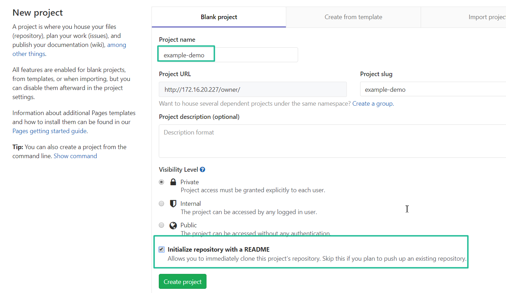
添加项目成员
添加maintainer@gitlab.com、developer@gitlab.com为项目成员，其角色分别为Maintainer、Developer。
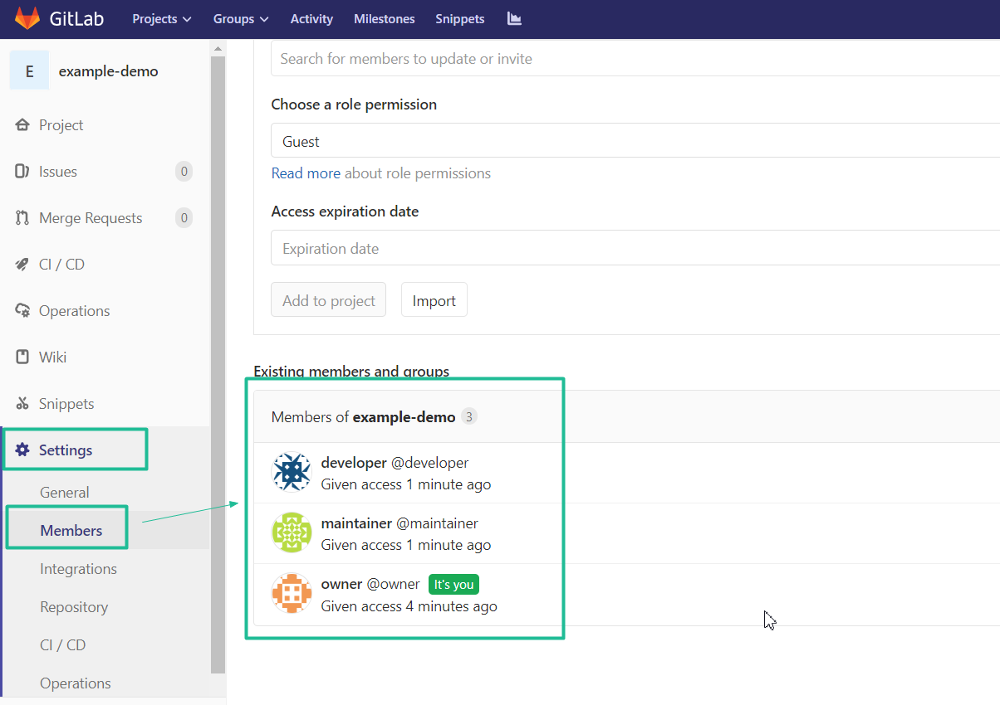
设置保护分支
master分支默认已经是保护分支。使用通配符*-stable设置预发布分支为保护分支，代码合并、代码推送的权限均设置为Maintainers。
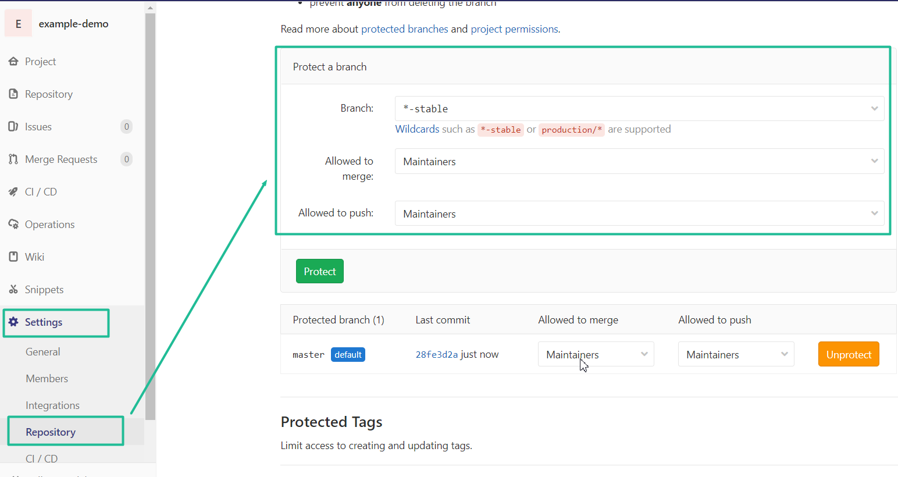
开发新功能
developer@gitlab.com创建新功能开发分支1.0.x-feature-login。
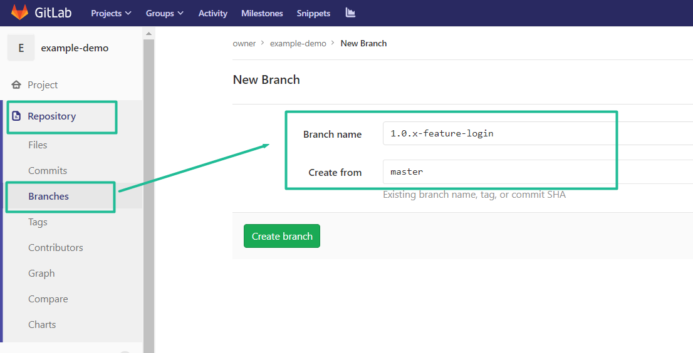
开发完新功能后，提交merge request到master分支。
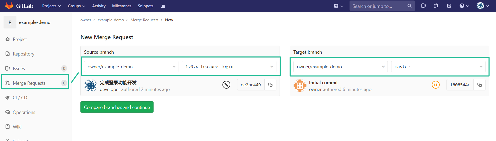
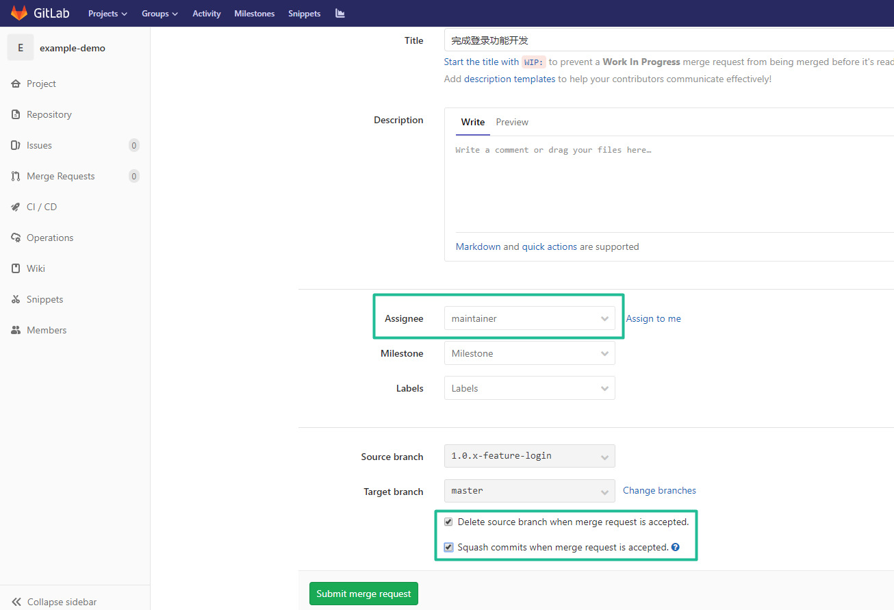
提交merge request时，指定assignee为maintainer，同时可将Delete source branch when merge request is accepted.和Squash commits when merge request is accepted.两个选项勾中。
合并请求
maintainer@gitlab.com登录gitlab查看提交的merge-request。点击merge按钮即可完成请求合并。
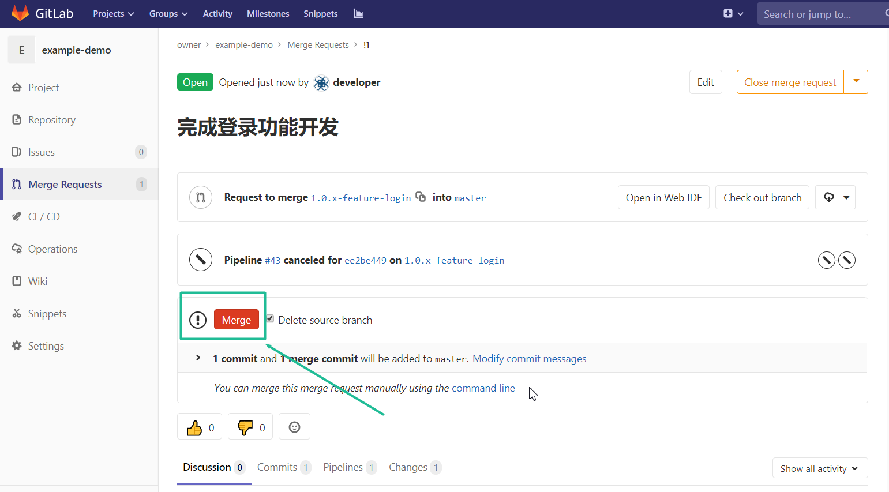
在合并之前，开发管理员还应对代码进行检视。
发布新版本
对master进行开发测试和测试人员测试之后，如具备发版条件就可以发版了。
maintainer@gitlab.com登录gitlab创建预发版分支。
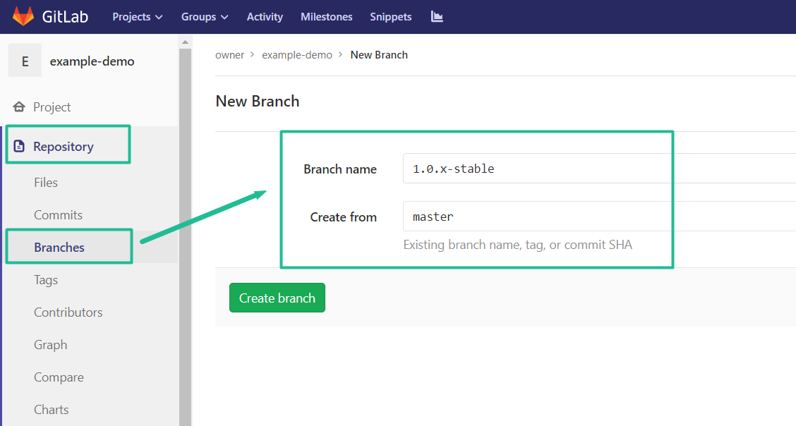
如有条件，还需要测试人员对预发版分支进行测试。
创建好预发版后，在该分支创建版本tag，创建成功后就可以看到发布的版本了。
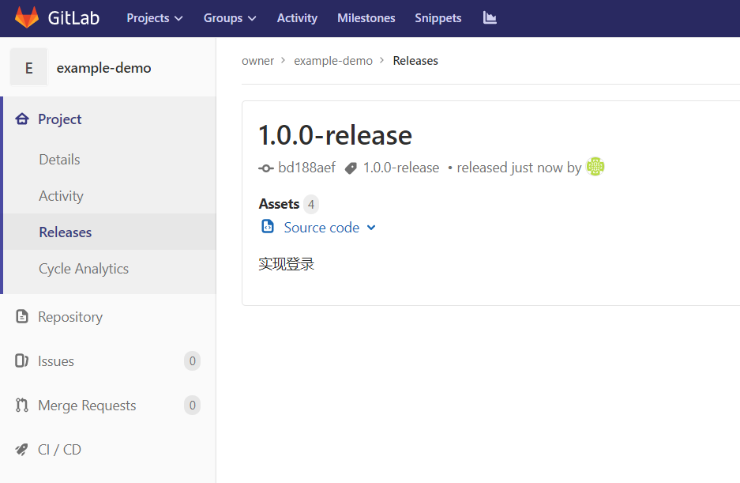
同理，发布2.0.0版本。
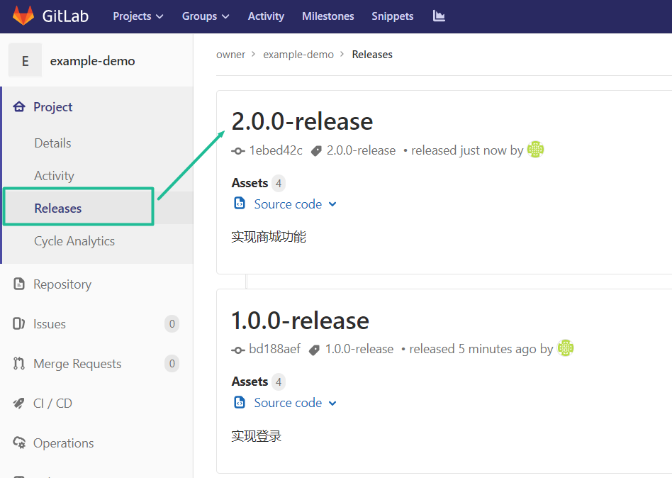
修复1.0.0版本发现的bug
developer@gitlab.com从master分支创建bug修复分支1.0.x-fix-login。修复后向master分支提交merge-request。
maintainer@gitlab.com对merger-request进行合并操作。合并后要提交给测试进行测试，测试验证通过后再同步到其他有同样问题的分支。
由于这是在1.0.0的版本上的问题，说明2.0.x同样有这样的问题，因此，需要通过Cherry-pick将这个修复同步合并到1.0.x-stable和2.0.x-stable分支。
先Cherry-pick到1.0.x-stable分支。
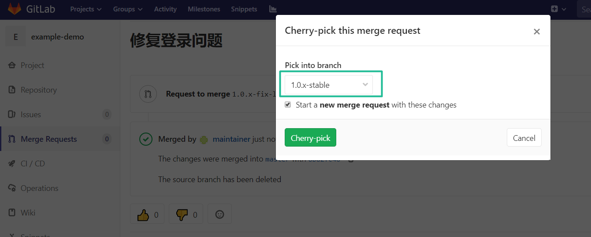
再Cherry-pick到2.0.x-stable分支。
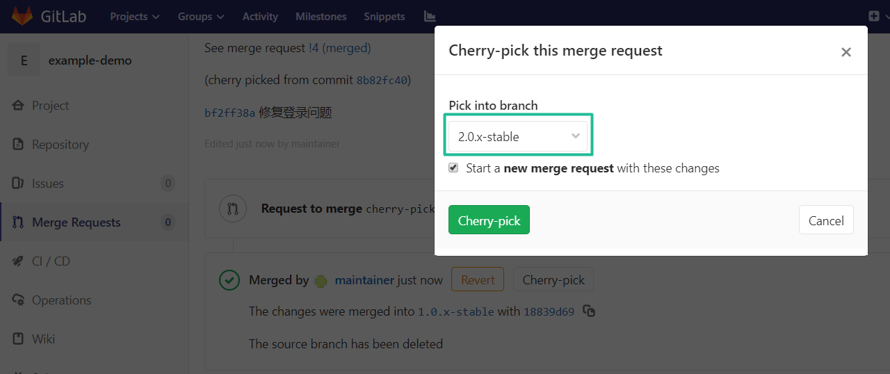
注意：
由于我们之前勾选了
Delete source branch when merge request is accepted选项，在进行Cherry-pick时会自动生成一个类似cherry-pick-{commit id}的分支，合并时如果没有选中Delete source branch的话可以手动删除该分支。
发布修复版本
基于1.0.x-stable发布1.0.1-release，基于2.0.x-stable发布2.0.1-release。
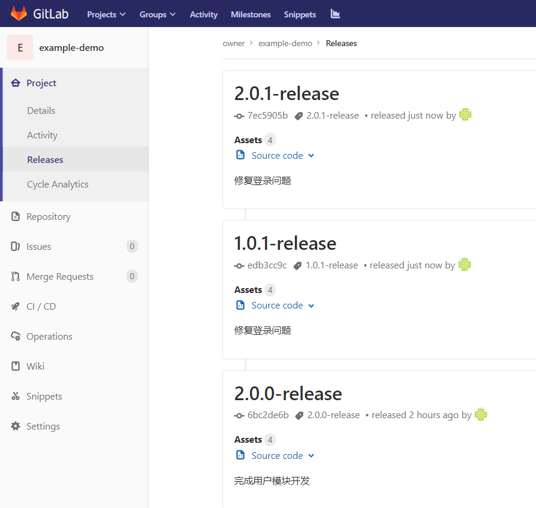
定制化分支
定制化功能分支应从某个stable分支拉出。
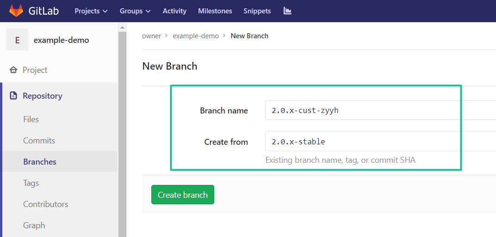
注意：
定制化的分支不能将代码合并到
master分支和其他的stable分支。